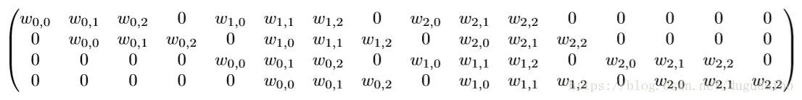
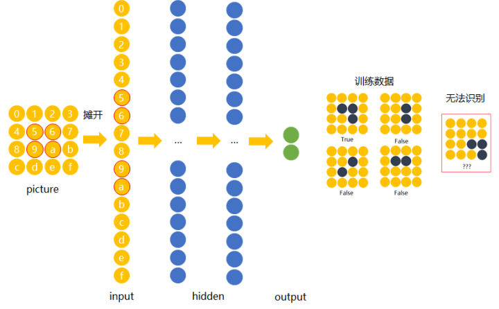
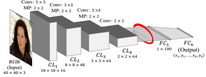
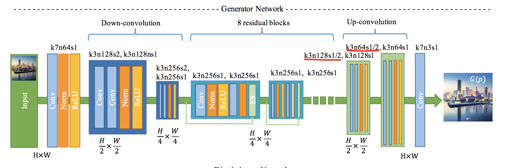
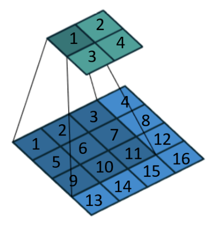
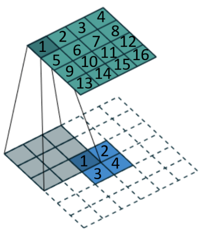
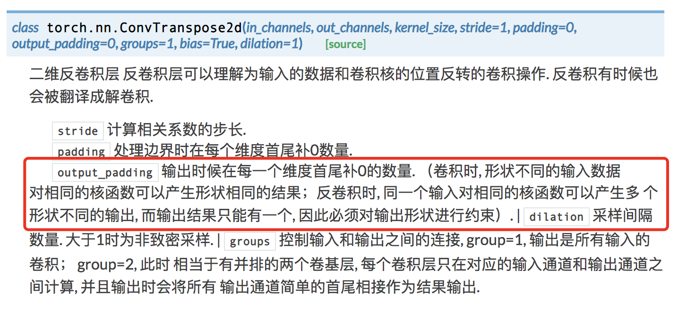

转置卷积层（Transpose Convolution Layer）又称反卷积层或分数卷积层，在最近提出的卷积神经网络中越来越常见了，特别是在对抗生成神经网络（GAN）中，生成器网络中上采样部分就出现了转置卷积层，用于恢复减少的维数。那么，转置卷积层和正卷积层的关系和区别是什么呢，转置卷积层实现过程又是什么样的呢，笔者根据最近的预研项目总结出本文。
卷积层和全连接层
在CNN提出之前，我们所提到的人工神经网络应该多数情况下都是前馈神经网络，两者区别主要在于CNN使用了卷积层，而前馈神经网络用的都是全连接层，而这两个layer的区别又在于全连接层认为上一层的所有节点下一层都是需要的，通过与权重矩阵相乘层层传递，而卷积层则认为上一层的有些节点下一层其实是不需要的，所以提出了卷积核矩阵的概念，如果卷积核的大小是n*m，那么意味着该卷积核认为上一层节点每次映射到下一层节点都只有n*m个节点是有意义的，具体的映射方式下一节会讲到。到这里，有些初学者会认为全连接层也可以做到，只要让权重矩阵某些权重赋值为0就可以实现了，例如假设在计算当前层第2个节点时认为上一层的第1个节点我不需要，那么设置$w_{01}=0$就可以了。其实没错，卷积层是可以看做全连接层的一种特例，卷积核矩阵是可以展开为一个稀疏的包含很多0的全连接层的权重矩阵，下图就是一个由4*4图片经过3*3卷积核生成一个大小为2*2output时，卷积核所展开的全连接层的权重矩阵。

可以看到，上面的矩阵大小为4*16，比卷积核3*3大了不少，因此使用卷积层而不用全连接层第一个原因就是可以极大的减少参数的个数，第二个原因就是卷积核关注的是某几个相邻的节点之间的关系，学习了图片的局部特征，可以说是带有目的性的学习，例如3*3的卷积核学习的就是相互距离为2的节点之间的关系。这与全连接层无区别的对待所有节点进行学习有极大的差别，这样一来就解决了前馈神经网络不能学习位移不变性的缺点。举个栗子，当我们在前馈神经网络中学习一个4*4的图片中是否有横折图案时，使用下图中4个训练数据进行训练，那么最终只会对5，6，9，a这四个节点的权重有所调节，然后如果出现如下图最后一张图片作为测试时，就会导致网络无法识别，而由于卷积核在不同节点间权重是共享的，所以就自然而然克服了这个问题。

卷积层的运算过程
最简单的卷积
卷积层的运算其实就是将多个卷积核作用于输入上，如下图所示，是最简单的一个卷积核所做的运算，no padding，no stride，底下蓝色方块看做是输入的图片，阴影部分就是3*3的卷积核（一般卷积核是个正方形，且边长为奇数），卷积核扫过时便与输入相乘再相加，最终得到2*2的输出，对应青色区域。
通常一层卷积层会包含多个卷积核，代表着卷积层的输出深度，例如下图就是我们经常在论文中看到的深度网络的架构，其中第一层就是卷积层+最大池化层，先不管最大池化层，至少我们可以明确卷积核的大小是5*5，卷积核个数是16，该层输出的size是18*18。

带padding的卷积
从最简单的卷积动图中我们可以看到，经过卷积操作，输出会比输入要小，但是有时候我们希望输出的size要与输入保持一致，而padding就是为了这个而引入的，而这种为了让输入和输出size保持一样的padding，我们会称之为”same padding”，可参考下面的动图，卷积核大小是3*3，padding是1，padding实际的表现就是在输入的四周补0，padding是多少就补多少层，且上限是卷积核大小-1，正如下图中虚线区域，一般来说，论文中是不会给出padding的大小，需要我们自己推导，推导公式可见下文。
根据padding大小不同，我们可以分为三种padding：
- same padding: 为了让输出和输入的size一样而补上的padding，例如3*3的核，same padding = 1，5*5的核，same padding = 2。
- full padding: padding = kernel size - 1
- valid padding: padding = 0
stride大于1的卷积
stride就是步长，表示卷积核两次卷积操作的距离，默认是1，上述讲的两个例子步长都是1，而下面两个动图展示的是stride为2的情况，分别是无padding和有padding的情况。通常stride大于1时我们称为等距下采样，因为这样输出肯定会丢失信息，size比输入的小。

卷积核输入输出size与卷积核的关系
上文中我们提到padding通常需要我们自己算出来，那么我们该怎么算呢，其实就是根据输入输出size和卷积核大小的关系算出来的，上面提到的几种卷积，其实就是卷积操作的三个参数，核大小(F)、padding(P)和stride(S)，如果细心的读者在看动图时就会发现输出size是可以根据输入size和那三个参数计算出来的，公式如下，这里只给出宽度的计算，高度也是一样的。
$W_2 = (W_1 - F + 2P) \div S + 1$
这里我们注意到上面的公式是有除法的，所以就会存在除不尽的情况，这时候我们需要向下取整，这种情况我们称为odd卷积，其过程可参考下面动图。
转置卷积层
讲完卷积层后，我们来看CNN中另一个进行卷积操作的层次转置卷积层，有时我们也会称做反卷积层，因为他的过程就是正常卷积的逆向，但是也只是size上的逆向，内容上不一定，所以有些人会拒绝将两者混为一谈。转置卷积层最大的用途就是上采样了，刚刚我们说到在正常卷积中stride大于1时我们进行的是等距下采样，会让输出的size比输入小，而转置卷积层我们就会用stride小于1的卷积进行上采样，使输出的size变大，所以转置卷积层还有个别称就是分数卷积层。上采样最常见的场景可以说就是GAN中的生成器网络，如下图所示，虽然论文作者使用的是conv，但由于它的步长为1/2，所以代表的就是转置卷积层。

为了理解转置卷积层，我们需要明白什么叫做正常卷积的逆向，这通常也是新手难以理解的地方，下面笔者通过两个图来更好的解释，第一个图是正常卷积的过程，第二个图就是其对应的转置卷积，在第一个图中，大的正方形中数字1只参与小正方形中数字1的计算，那么在转置卷积中，大正方形的1也只能由小正方形的1生成，这就是逆向的过程。

和讲述正常卷积的过程一样，笔者下面也会一一给出相对应的转置卷积。
no padding no stride的卷积对应的转置卷积
上面用作解释转置卷积的逆向过程时用到的图其实就是最简单(no padding, no stride)卷积以及其对应的转置卷积，这里给出它的动图。
带padding的卷积的转置卷积
在正卷积中如果是有padding，那么在转置卷积中不一定会有padding，其计算公式下文会给出，这里先给出2.2对应的转置卷积动图。
stride大于1的卷积的转置卷积
在本节一开始就讲到，stride大于1的卷积是下采样，那么其对应的转置卷积便是stride小于1的上采样，但是不管是在pyTorch还是TensorFlow中，convTranspose函数的参数都是整数，不可能将stride设置为小于1的浮点数，那么我们会依然给convTranspose函数传入正卷积的stride，而convTranspose是怎么做的呢，可见下面的动图，它是2.3中无padding卷积对应的转置卷积，我们先不看转置卷积中的转置padding，也就是动图中外部的虚线区域，然后会发现每两个蓝色块之间都插入了白色块，也就是0，这样一来，卷积核每移动一步不就相当于是只移动了1/2步嘛，所以我们可以得出每两个蓝色块之间需要插入stride -1个0。
正卷积和转置卷积的换算关系
转置卷积的padding
从上面3个例子的转置卷积中我们可以发现，如果用正卷积实现转置卷积时，卷积核的大小是保持不变的，而stride是为正卷积stride的倒数（只是我们插入0来模拟分数移动），最后，转置卷积的padding要怎么算呢，虽然如果我们调用pyTorch或TensorFlow时不需要管，传入正卷积的padding即可，但是理解convTranspose是怎么做的也有助于我们理解转置卷积。说了这么多，其实在我们为了让转置卷积保证是正卷积的逆向时，我们就不得不补充转置padding，我们用$P^T$表示，其计算公式为：$P^T = F - P - 1$，其中F为正卷积的核大小，P为正卷积的padding。
转置卷积的输出size
这个其实很好算，因为我们都说转置卷积的逆向，所以我们只需在2.4给出公式中转换下求出$W_1$即可，公式如下：
$W_1 = (W_2 - 1) \times S - 2P + F$
其中S是正卷积的stride，P是正卷积的padding，F是正卷积的核边长。
odd卷积的转置卷积
这个可以说是转置卷积中最难理解的一种情况，在2.4中我们提到在除以stride时可能会除不尽要向下取整，那么我们在求$W_1$时就会有不确定性，举个栗子，还是第3节一开始给出的图，我们是希望将W/4的图放大到W/2的程度，这是一个转置卷积的过程，我们先算一遍正卷积，从W/2下采样到W/4，k代表核边长为3，s是stride为1/2的倒数，即2，padding根据2.4的公式推导为1，所以正卷积的计算公式是：$(\frac{W}{2} - 3 + 2) \div 2 + 1 = \frac{W}{4} + \frac{1}{2}$，然后向下取整就是$\frac{W}{4}$，和图上显示的是一样，但是如果我们通过3.4.2的公式反过来计算，就是$(\frac{W}{4} - 1) \times 2 - 2 + 3 = \frac{W}{2} - 1$，这就是odd转置卷积的不确定性，我们再回头看2.4给出的动图，会发现右边和下边的填充区域我们并没有进行卷积运算，因为向下取整而忽略了，所以我们在转置卷积时需要将这部分加回来，因此，在PyTorch中convTranspose函数还有一个参数output_padding就是负责处理这个的，TensorFlow应该也有相应的参数，笔者不太熟悉，下面就是PyTorch对该参数的描述，和我们遇到的情形一模一样。

至于output_padding的值，应该为$(W_1 - F + 2P) % S$，在上面提到的例子中就应该是1。
总结
本文先是介绍了卷积神经网络和传统的前馈神经网络的联系和区别，然后再通过不同参数的卷积过程阐述卷积运算，最后再介绍刚入门深度学习时晦涩难懂的转置卷积，给出不同参数下正卷积所对应的转置卷积，最后总结出在卷积运算中所用到的公式。希望笔者上述的分析和解释能对刚入门CNN的同学有所帮助，而且笔者是从事iOS开发的，对于CNN和深度学习也是刚刚入门，希望各位AI大牛们不吝指教。
参考文档
- 知乎上对CNN的直观解释，平移不变性笔者是从这里了解到的
- 《A guide to convolution arithmetic for deep learning》的github，本文的动图都来自于此
- 关于转置卷积和卷积的联系和区别